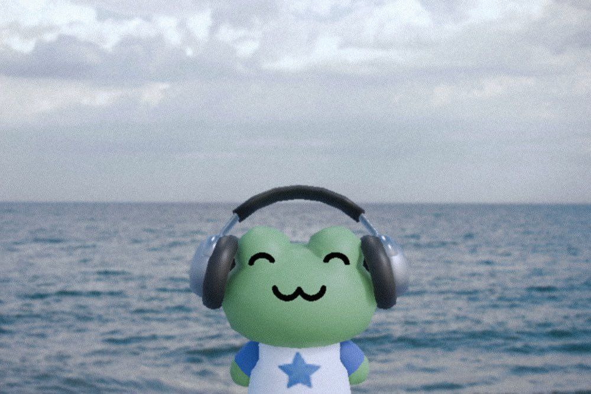

MAC0446/MAC5786 - Princípios de Interação Humano-computador
- Grupo: Morcego
- Integrantes:
- Beatriz Gonzaga Correia - N°USP: 13717132
- Bruno Hideki Akamine - N°USP: 11796322
-  Idian Camargo Capozzoli - N°USP: 11857299
- Lucas Eiji Uchiyama - N°USP: 11807470
Descrição do projeto
ODS escolhida: Objetivo 3 - Saúde e Bem-Estar
Objetivo específico: 3.4 - Promover saúde mental e bem-estar emocional
Público-Alvo: Estudantes universitários e recém-formados em fase de transição para o mercado de trabalho
Justificativa: O grupo foi escolhido por representar uma população frequentemente exposta a altos níveis de estresse, pressão por desempenho e insegurança profissional. A escolha busca compreender como essas pessoas lidam com a manutenção de seu bem-estar emocional, quais recursos utilizam e onde sentem falta de suporte.